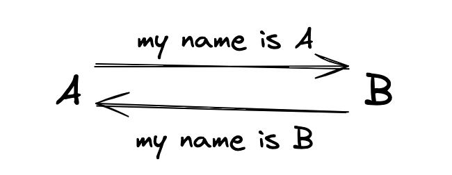

加密算法的演化过程
加密算法的演化过程
阶段1（明文）：

A 和 B在网上聊天，但是双方完全使用明文的方式传输信息，那如果有一天，A问B要游戏账号和密码，B发送了过来，这时候信息一旦被第三个看到，信息直接泄露。
阶段2（对称加密）：
A 和 B商量一下，以后咱们说话，先通过一个工具加密一下，比如每个字母往后3位，等你收到了信息，再利用工具，把每个字母往前3位，这样就保证信息即便被人看到了，也不知道说什么.png)
这个也叫对称加密，即加密和解密来自于一个秘钥。但这里仍有个问题，这个加密解密方法(秘钥)怎么安全让对方知道，别人都知道咱们是怎么加密解密的了，那即使发送的加密信息也没用啊，除非A跑到B他们家，给出秘钥。但全球范围内的通讯，不能这么搞吧。
阶段3（非对称加密）：
A 和 B又发现了新方法，咱俩一人创建一个公钥和私钥，然后交换对方的公钥，这个公钥即使被人看到了也无所谓，当你要给我发消息时，你用我的公钥进行加密，然后发给我，我在我这里用自己的私钥再解密即可，这样私钥只在我一个人手上，就不担心信息泄露了。这也叫做非对称加密.png)
但是用了一段时间后，A和B都感觉和对称加密比起来，非对称加密太慢了，已经严重影响沟通了啊。
阶段4（加密结合）：
使用对称加密时，速度快，但是担心秘钥泄露。
使用非对称加密时，速度慢，但是安全。
那我们可以把两者结合一下，先使用非对称加密，相互获取公钥，然后生成一个对称加密的秘钥，用非对称加密的公钥加密后传送，这样对方获得了信息后，使用私钥进行解密，就得到了对称加密的秘钥，这样未来就能安全快速的交流了。.png)
一切看起来完美了，但是有一个问题是：在第一次A发送公钥给B时，B怎么知道这个公钥是不是A的，也就是说，假如中间突然出现一个H，拦截了A的公钥，然后把自己公钥发送了B，然后B将对称加密的秘钥发送给了A，但也被H拦截了，这时候H就知道秘钥是什么了，然后再用A的公钥对秘钥加密发送给了A，这时候A也就顺利的获取了秘钥了，但是A和B都没有意识到，中间有一个H操控一切，之后的所有通讯都是暴露的。画图示例：.png)
阶段5（引入证书）
为了解决A和B之间传输的证书是否真的来源于彼此，所以引入了受信任的证书颁发机构（CA）签发的数字证书。
- A找到一家机构，拿上材料，证明我就是我。然后机构给我个证书，这玩意儿包含我的服务器公钥和身份信息和CA机构使用私钥进行的数字签名。
- A把证书发给了B，B利用CA的公钥验证这个签名，以确认证书没有被篡改且确实是来自可信的CA。
- 这时候B就能放心的使用A证书内的公钥，进行之后的交流了。
但大家可能会想，如果H拦截了A的证书，然后把自己的证书发送给了B，那这不又完蛋了嘛。
所以B在拿好证书时：
- 先检查证书是不是由受信任的CA签发的，否则证书无效。
- 再检查证书内的IP地址或者域名，是不是A的，否则证书无效。
- 查询证书是否过期了，否则证书无效
再通过一些其他手段不断去检测该证书的有效性，最终双方成功进行加密聊天。
其实这个过程也就是HTTPS大致所做的事情，我们将A和B替换为：服务器和浏览器。为了保证交互之间的安全，做了大量的事情，我们有时在访问某些网站时，显示证书已过期之类的，一定要加强重视，不要直接点忽略！！！